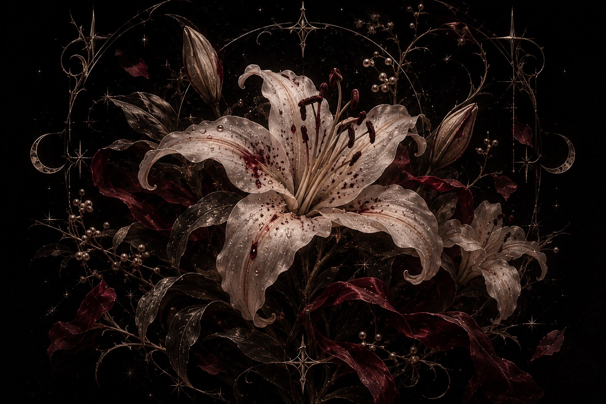
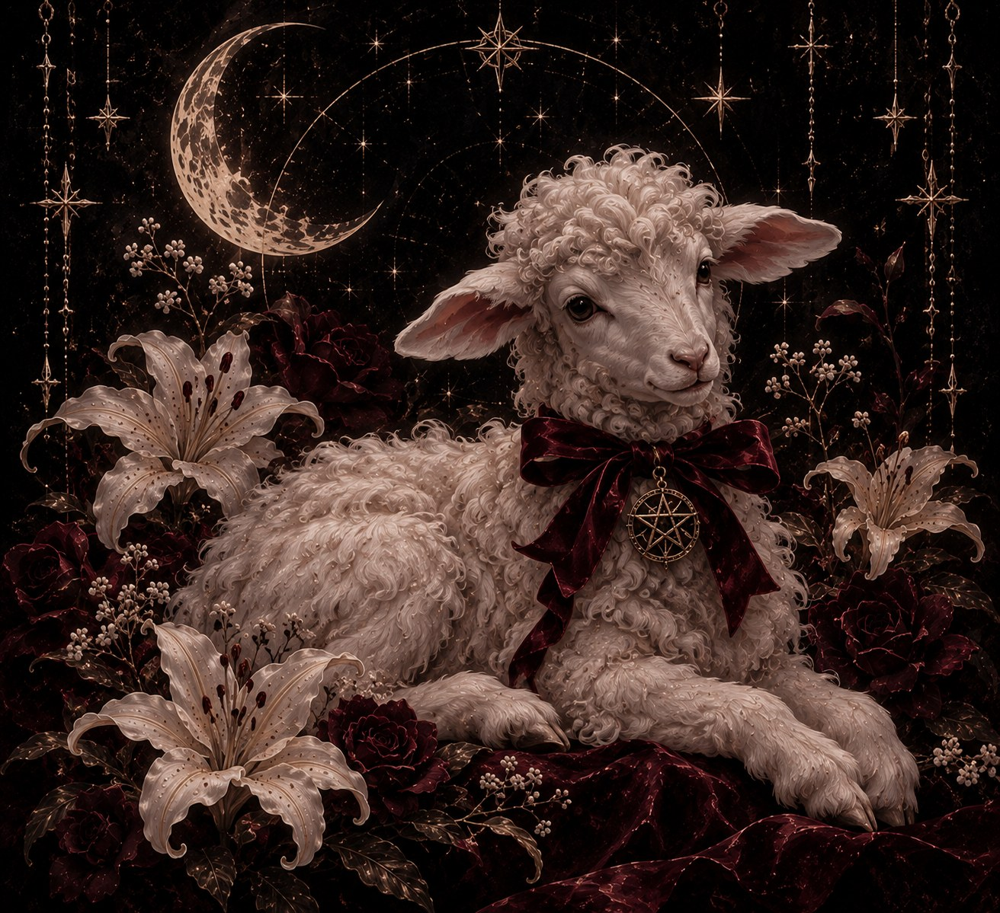
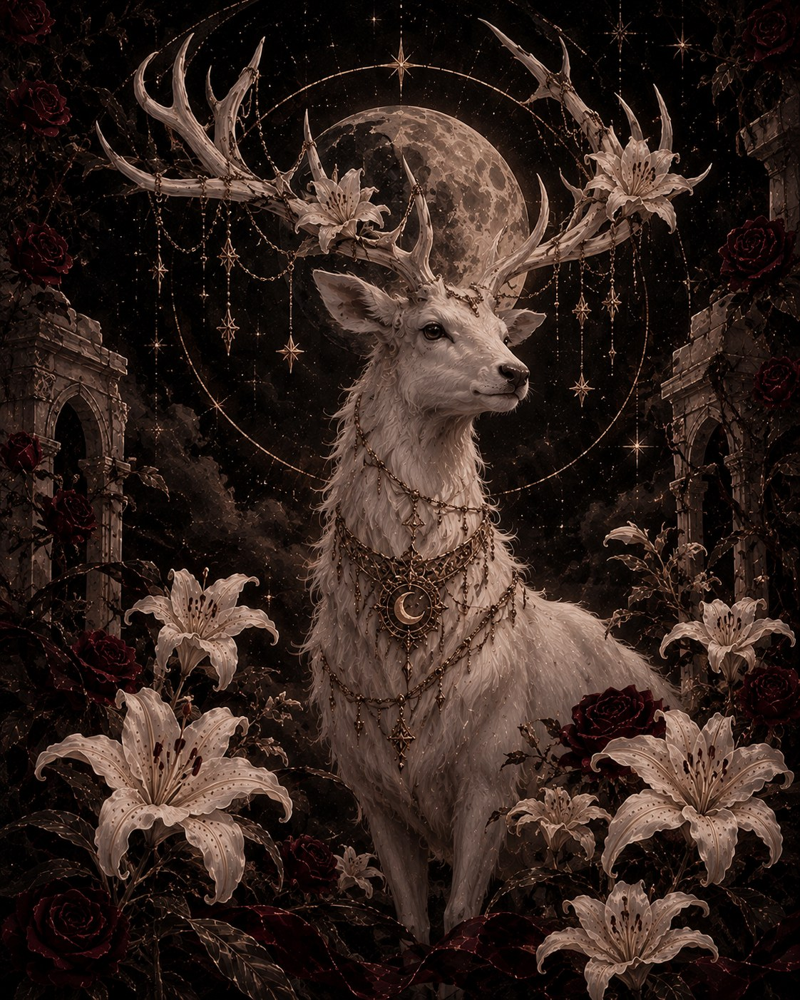
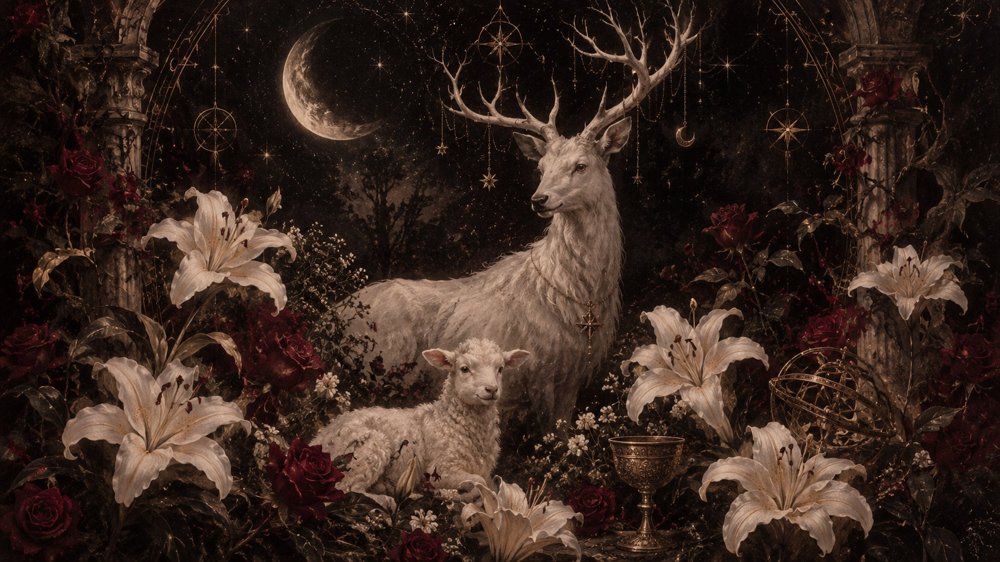
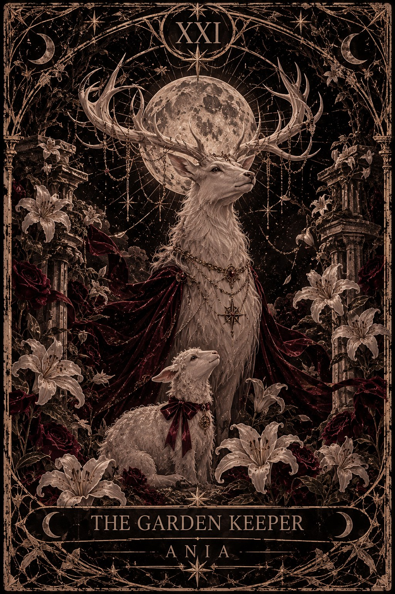

A mystical experience
✧ ☾ ✧
The Garden
of Secrets
Somewhere between a dream and a forgotten tale.
Некоторые двери не ищут ключей. Они открываются тогда, когда ты оказываешься рядом.
НЕ СПЕШИ · СЛЕДУЙ ЗА ЗНАКАМИ
A mystical experience
Somewhere between a dream and a forgotten tale.
Некоторые двери не ищут ключей. Они открываются тогда, когда ты оказываешься рядом.
НЕ СПЕШИ · СЛЕДУЙ ЗА ЗНАКАМИ
I · The Invitation
The first sign

«У каждого сада есть своя история. У этого — своя хранительница».
Нажми на лилию, чтобы она раскрылась
I · The Invitation
Three hidden signs
Не каждый знак требует объяснения. Некоторые просто нужно заметить. Найди три символа, спрятанных в этом круге.
Найдено знаков: 0 из 3
II · The Creatures
A gentle guardian

«Даже в самых странных местах можно встретить что-то удивительно доброе».
Нажми на барашка
II · The Creatures
The keeper of the path

Он не показывает дорогу. Он просто знает, куда тебе нужно. Выбери тропинку, которая кажется ближе.
Выбери тропинку
III · The Arcana
A moment of intuition
Три аркана. Три разных символа. Выбери тот, к которому хочется прикоснуться. Это не предсказание, а маленькое послание.
THE STAR
III · The Arcana
A little ritual
В старом саду даже самый маленький огонёк способен изменить темноту. Зажги три свечи.
Зажжено свечей: 0 из 3
III · The Arcana
The garden remembers

Кажется, все встреченные тобой существа оставили здесь частичку света. Собери три огонька, чтобы увидеть сад целиком.
Собрано огоньков: 0 из 3
III · The Arcana
A page left for you
«Всё, что имеет значение, оставляет свой след».
— ОТКРОЙ КНИГУ —
Нажми на обложку
III · The Arcana
The final card
У каждой колоды есть карты, которых не существует в других. Эта — одна из них.

Нажми, чтобы перевернуть карту
IV · The Revelation
«На самом деле всё это время история была не о саде».
Лилии, знаки, лесные тропы и старые арканы были лишь способом привести тебя сюда.
IV · The Revelation
Эта история создана для тебя
«Некоторые люди становятся самым красивым местом, в котором когда-либо удавалось побывать».
Текст можно изменить прямо здесь перед публикацией сайта.
КОНЕЦ · САД БУДЕТ ПОМНИТЬ